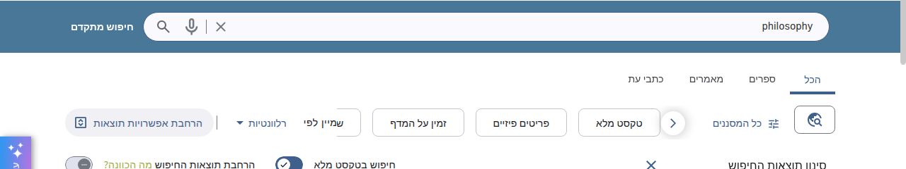
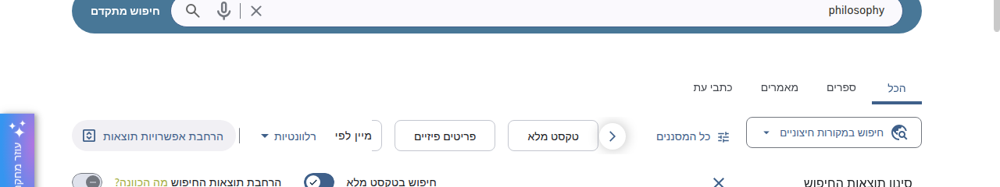
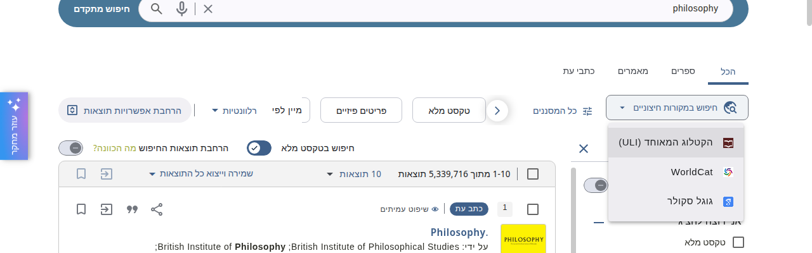
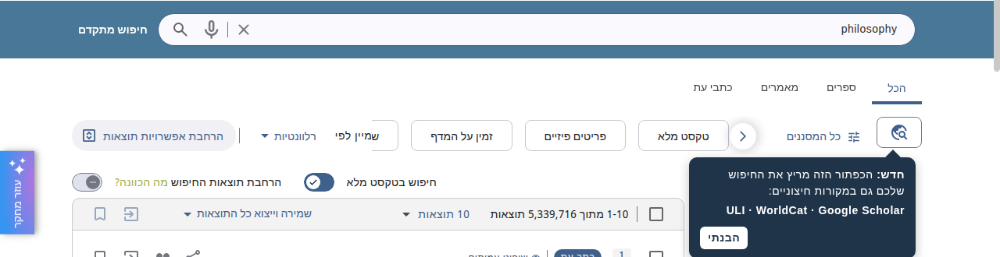
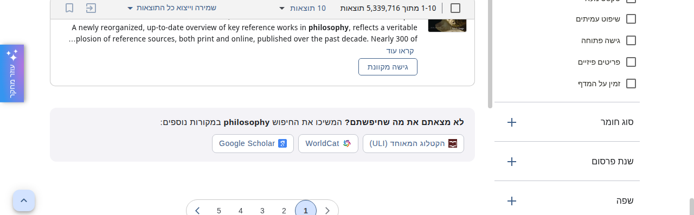

ההערה נכונה: גלובוס לבד לא מסביר את עצמו. אבל הבעיה היא בכפתור, לא ברעיון. מה שחסר הוא מילים, או הצעה שמופיעה ברגע שבו צריכים אותה. להלן שלוש דרכים לעשות זאת.

כפתור גלובוס בלי טקסט, בתחילת שורת המסננים (מימין).
כל התמונות הן צילומי מסך אמיתיים של NDE_TEST (6 באוקטובר 2026). השינויים נעשו בדפדפן אחד בלבד לצורך ההדגמה. הנוסח הוא טיוטה.


אותו כפתור, באותו מקום, עם אותו תפריט. עכשיו כתוב עליו „חיפוש במקורות חיצוניים” ויש לו חץ, כמו לשאר הפקדים בשורה.
המחיר: הכפתור רחב יותר, ולכן מסנן מהיר אחד או שניים זזים מחוץ לתצוגה (אפשר לגלול אליהם עם החץ).

הכפתור נשאר קטן כמו היום. בחיפוש הראשון מופיעה לידו בועה קצרה שמסבירה מה הוא עושה. לחיצה על „הבנתי” סוגרת אותה, והיא לא חוזרת באותו דפדפן.
לא תופס מקום קבוע ומסביר גם את הרעיון וגם את הפעולה. החיסרון: אחרי שהבועה נסגרה חוזרים לאייקון בלבד. במחשבים ציבוריים שמוחקים נתוני גלישה היא תופיע בכל ביקור.

אחרי התוצאה האחרונה בכל עמוד: „לא מצאתם את מה שחיפשתם?” ושלושת המקורות, עם החיפוש הנוכחי. מי שהגיע לתחתית העמוד הוא בדיוק מי שצריך מקור אחר.
כבר היום מוצגים אותם קישורים כשחיפוש לא מוצא כלום. זה מרחיב אותם לחיפושים שמצאו משהו, אבל לא את הדבר הנכון. ההצעה נמצאת מחוץ לשורת המסננים ולא מתחרה בהם.
| 1 — מילים על הכפתור | 2 — הסבר חד-פעמי | 3 — הצעה בסוף התוצאות | |
|---|---|---|---|
| מובן בלי ריחוף | כן, תמיד | כן, בפעם הראשונה; אחר כך אייקון בלבד | כן, תמיד |
| עובד בטלפון | כן | כן | כן |
| מקום על חשבון המסננים | מסנן אחד או שניים זזים | אין | אין |
| מגיע למשתמש ברגע הצורך | רק אם מסתכלים על שורת המסננים | בחיפוש הראשון | כן, בסוף כל עמוד |
| היקף עבודה | קטן: טקסט וחץ על הכפתור הקיים | קטן עד בינוני: הבועה, וזיכרון שנסגרה | בינוני: שימוש חוזר בקישורים הקיימים. טרם נבדק אם Primo מאפשר להוסיף תוכן אחרי רשימת התוצאות |
ההמלצה: 1 ו-3 יחד. המילים עונות על השאלה „מה הכפתור הזה?”, וההצעה בסוף התוצאות תופסת את מי שלא מסתכל על שורת המסננים בכלל. אם המקום בשורת המסננים חשוב יותר, אפשר להחליף את 1 ב-2.
אפשר להעלות כל אחת מהאפשרויות ל-NDE_TEST כדי לנסות אותה לפני החלטה. כדי לבחור, ענו עם מספר או שילוב (למשל „1 ו-3”).